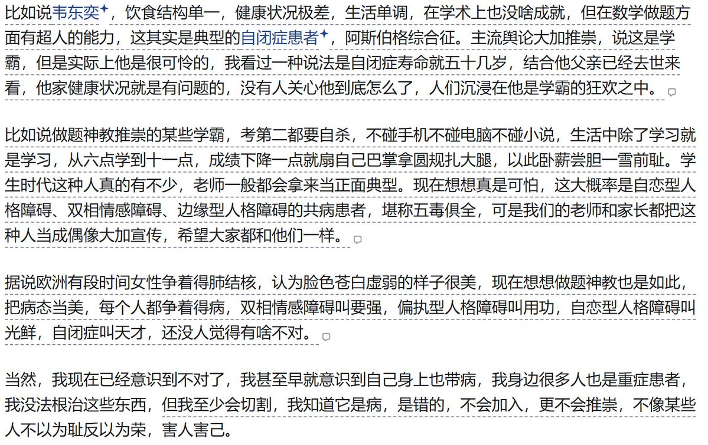

昨天和欧润吉🍊
@YesterdayOrange
作者：哥哥
链接：https://t.co/VLATpubGv3
来源：知乎
著作权归作者所有。商业转载请联系作者获得授权，非商业转载请注明出处。比如说做题神教推崇的某些学霸，考第二都要自杀，不碰手机不碰电脑不碰小说，生活中除了学习就是学习，从六点学到十一点，成绩下降一点就扇自己巴掌拿圆规扎大腿，以此卧薪尝胆一雪前耻。学生时代这种人真的有不少，老师一般都会拿来当正面典型。现在想想真是可怕，这大概率是自恋型人格障碍、双相情感障碍、边缘型人格障碍的共病患者，堪称五毒俱全，可是我们的老师和家长都把这种人当成偶像大加宣传，希望大家都和他们一样。
